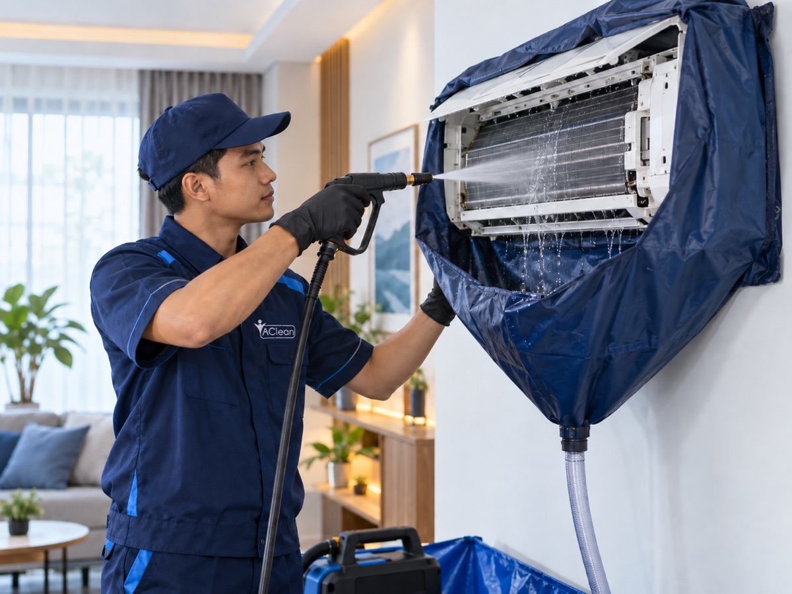
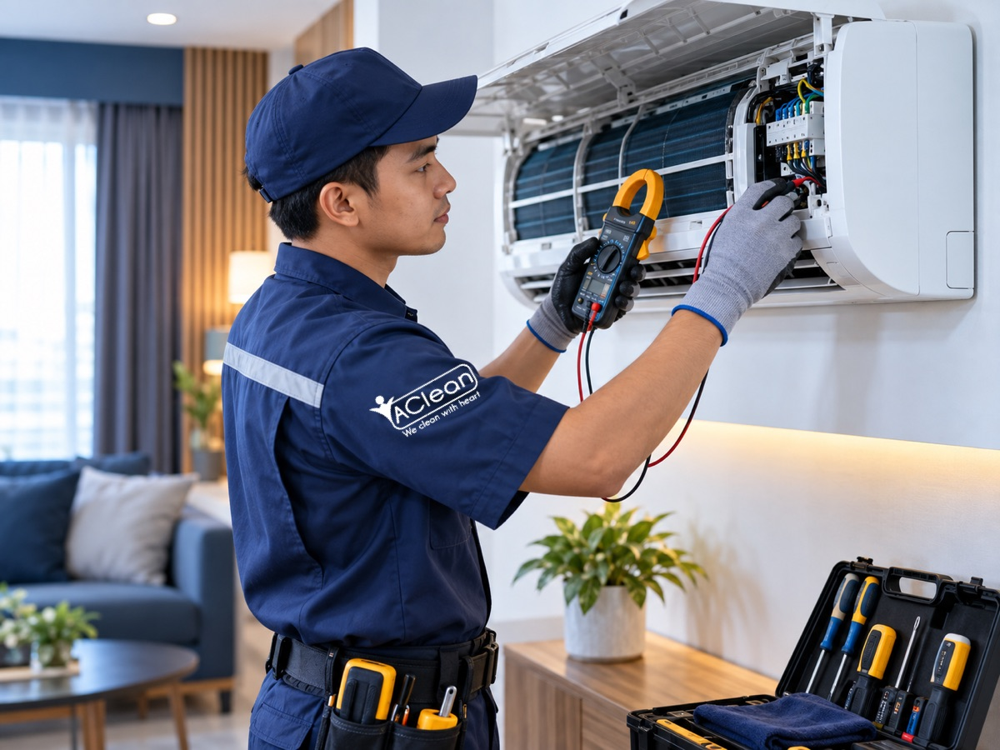
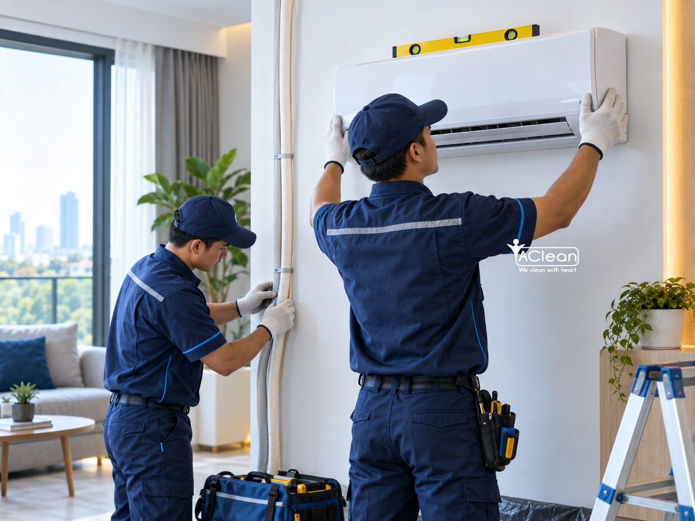
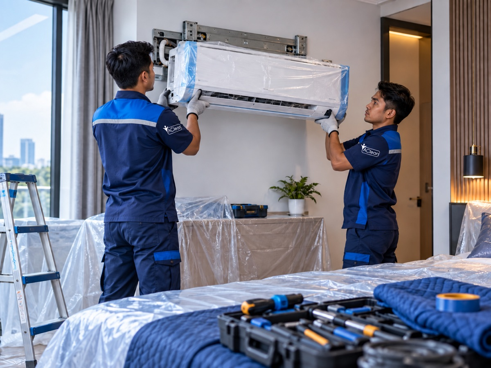
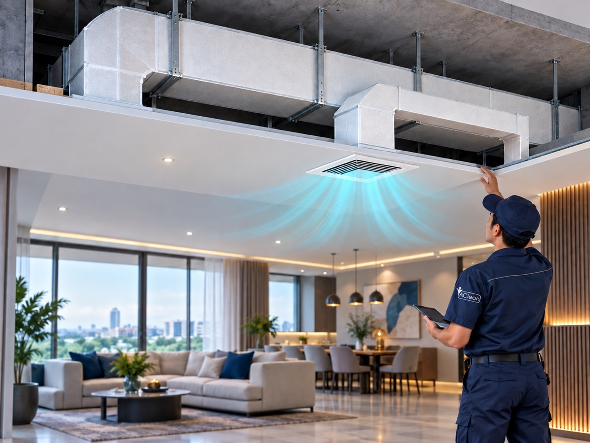
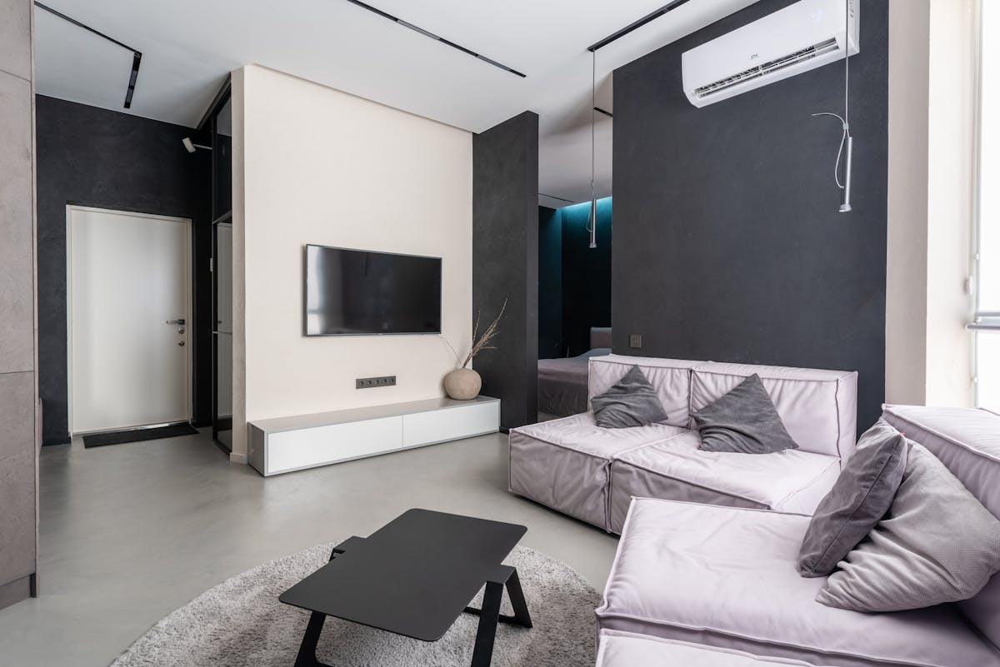
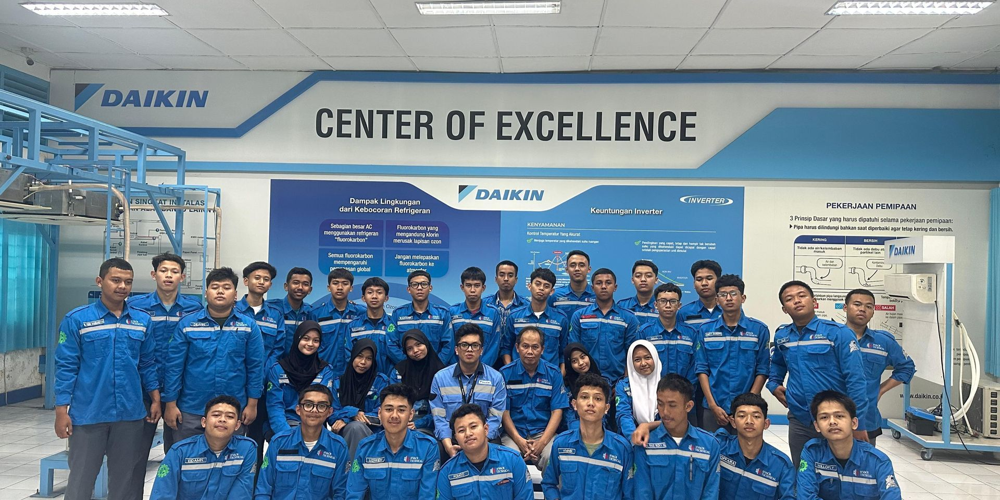

Terlaris
Jasa Cleaning AC
Pembersihan menyeluruh unit evaporator, kondensor, dan filter agar AC kembali dingin maksimal.
Rp 95.000/unit
- Cleaning unit evaporator
- Cleaning unit kondensor
- Cleaning filter udara
- Pengecekan freon & ampere
Layanan service, cleaning, pemasangan & perbaikan AC profesional untuk rumah dan kantor Anda di area Tangerang Selatan.

Evaporator + Kondensor + Filter
Kami mengutamakan kualitas, kecepatan, dan kepuasan pelanggan di setiap layanan.
Tim teknisi berpengalaman dan tersertifikasi yang menangani semua jenis AC — split wall, cassette, standing, hingga central/VRV.
Kami hanya menggunakan suku cadang asli berkualitas tinggi untuk memastikan performa optimal AC Anda.
Menyediakan pabrikasi dan pemasangan ducting PU & BJLS untuk kebutuhan AC central gedung dan pabrik.
Tim CS siap membantu kapan saja. Respon cepat via WhatsApp untuk booking dan konsultasi.
Solusi lengkap untuk semua kebutuhan AC rumah dan kantor Anda.

Pembersihan mendalam indoor & outdoor dengan jet cleaner. Evaporator + filter + kondensor.

Perbaikan semua jenis kerusakan AC. Diagnosa lengkap & solusi tepat oleh teknisi berpengalaman.

Pengisian freon R32 & R410A. Cek kebocoran gratis, freon original, AC kembali dingin optimal.

Pemasangan AC baru profesional semua merk. Termasuk instalasi pipa, kabel & outdoor bracket.

Bongkar & pasang ulang AC untuk pindahan atau renovasi. Rapi, cepat, dan bergaransi.

Design, fabrikasi & instalasi ducting AC berbahan PU Board. Cocok untuk rumah open-plan, kantor, kafe. Survei gratis.
Rincian pekerjaan, harga, dan cakupan untuk setiap paket layanan AClean.
Pembersihan menyeluruh unit evaporator, kondensor, dan filter agar AC kembali dingin maksimal.
Deep cleaning komprehensif dengan bongkar unit indoor, pembersihan fan blade dan evaporator.

Isi ulang freon original Daikin untuk tipe R-32, R-410, dan R-22. Garansi 14 hari.

Jasa pemasangan AC baru untuk rumah, kantor, atau ruang komersial dengan instalasi rapi.

Layanan bongkar AC lama dan pasang AC baru atau pindah lokasi unit AC secara profesional.

Kontrak maintenance rutin untuk AC kantor, gedung, dan pabrik demi performa optimal.
Sebagian besar perusahaan di Tangerang menghadapi masalah yang sama dengan vendor maintenance AC mereka.
"Dulu kami tidak tahu unit mana yang sudah diservis bulan ini. Sekarang staf kami cukup buka link portal dan semuanya terlihat jelas."
Klien AClean mendapat akses portal eksklusif yang bisa dibagikan ke manajer fasilitas, tim finance, hingga direksi — satu link, semua informasi.
Lihat unit mana paling sering rusak & total biaya perbaikannya. Putuskan ganti atau servis berdasarkan angka, bukan asumsi.
Jadwal Preventive Maintenance otomatis tercatat. Sistem beri peringatan saat unit mendekati jadwal — bukan PM yang diklaim tapi tidak dilakukan.
Setiap log mencatat nama teknisi yang mengerjakan. Anda tahu siapa yang masuk area perusahaan Anda — ada akuntabilitasnya.
Konsultasi gratis, survey lokasi tanpa biaya, portal klien aktif dalam 3 hari kerja.
🏢 Lihat Selengkapnya — B2B Service ACleanProses mudah dan transparan dari booking hingga AC kembali dingin.
Chat via WhatsApp, jelaskan masalah AC. Tim CS bantu tentukan layanan dan jadwal kunjungan.
Teknisi profesional datang ke lokasi sesuai jadwal. Pengecekan menyeluruh sebelum pengerjaan.
Service dikerjakan dengan peralatan lengkap dan sparepart original. Bersih dan rapi.
AC di-test untuk memastikan berfungsi optimal. Anda mendapat garansi resmi.
500+ pelanggan puas dengan layanan AClean.
"Sudah hampir 3 tahun ini selalu menggunakan jasa AClean. Servicenya bagus. Dulu sebelum menggunakan jasa AClean setiap cuci AC berkala, selalu dibilang harus tambah freon. Tapi AClean tidak membohongi konsumennya. Terima kasih AClean."
"Teknisi profesional, sopan, dan detail dalam pengerjaan. Eksekusi cepat walaupun dalam kondisi mendesak. Sangat puas dengan hasilnya, AC kembali dingin maksimal setelah di-service."
"Pelayanan ramah, harga sesuai dengan kualitas yang diberikan. Problem solving cepat dan AC langsung terasa bedanya setelah di-cleaning. Recommended untuk area Gading Serpong!"
"Respon admin cepat, penjadwalan mudah. Teknisi datang tepat waktu dan sangat teliti dalam bekerja. Performa AC jauh lebih baik setelah service. Pasti pakai AClean lagi."
"Suka banget sama pelayanannya. Komunikasi jelas dari awal, harga transparan, tidak ada biaya tersembunyi. Teknisinya juga rapi, setelah selesai lokasi dibersihkan kembali."
"Udah langganan dari lama. Setiap kali ada masalah AC, tinggal WA langsung dijadwalin. Teknisi selalu on-time dan kerjanya bersih. Harga juga masuk akal untuk kualitasnya."
AClean melayani jasa service AC di wilayah Tangerang Selatan dan sekitarnya.
Pelajari cara merawat AC agar tetap dingin, awet, dan hemat listrik.

AC menyala tapi tidak dingin? Kenali 7 penyebab utamanya dan cara mengatasinya.
Baca Selengkapnya →
AC bocor bisa merusak dinding dan lantai. Pelajari penyebab dan perbaikannya.
Baca Selengkapnya →
Freon R-32 atau R-410A? Ketahui mana yang lebih hemat, aman, dan ramah lingkungan untuk AC Anda.
Baca Selengkapnya →Service AC profesional dengan harga terjangkau.
Cleaning AC mulai Rp 95.000/unit — Garansi resmi.
Atau hubungi: 0812-8989-8937